<section class="oe_container" style="font-family: 'Segoe UI', Roboto, Helvetica, Arial, sans-serif; color: #13213F; background: #ffffff;">
<div style="max-width: 1140px; margin: 0 auto; padding: 0 16px 40px;">

    <!-- ========================= HERO ========================= -->
    <div style="background: #F2F6FB; border-radius: 16px; padding: 36px 32px 30px; margin-top: 16px; text-align: center;">
        
        <h1 style="font-size: 44px; line-height: 1.1; font-weight: 800; color: #13213F; margin: 22px 0 8px;">Cargo Pilot TMS</h1>
        <p style="font-size: 22px; font-weight: 600; color: #1F56B8; margin: 0 0 14px;">Transport, Dispatch &amp; Courier Management for Odoo 19</p>
        <p style="font-size: 17px; line-height: 1.6; color: #3A4660; max-width: 820px; margin: 0 auto;">
            From the sales order to the paid freight bill in one Odoo flow: plan the right truck, ask your regular partners first,
            run a 15-minute live bid with 3PL vendors, control the gate and detention, track every truck, verify the POD and pay
            only what was agreed.
        </p>
        <p style="margin: 22px 0 0;">
            <span style="display: inline-block; background: #13213F; color: #ffffff; border-radius: 6px; padding: 6px 14px; margin: 3px; font-weight: 700; font-size: 14px;">Odoo 19</span>
            <span style="display: inline-block; background: #ffffff; color: #13213F; border: 2px solid #13213F; border-radius: 6px; padding: 4px 12px; margin: 3px; font-weight: 700; font-size: 14px;">Community &amp; Enterprise</span>
            <span style="display: inline-block; background: #ffffff; color: #13213F; border: 2px solid #13213F; border-radius: 6px; padding: 4px 12px; margin: 3px; font-weight: 700; font-size: 14px;">Works on phones</span>
            <span style="display: inline-block; background: #ffffff; color: #13213F; border: 2px solid #13213F; border-radius: 6px; padding: 4px 12px; margin: 3px; font-weight: 700; font-size: 14px;">GST · E-way bill · FASTag · WhatsApp</span>
            <span style="display: inline-block; background: #1FB3CC; color: #13213F; border-radius: 6px; padding: 6px 14px; margin: 3px; font-weight: 700; font-size: 14px;">One module · 140 automated tests</span>
        </p>
    </div>

    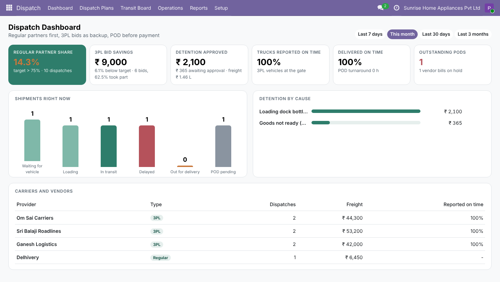
    <p style="text-align: center; color: #4A5672; font-size: 15px; margin-top: 10px;">The <b>Dispatch Dashboard</b>: regular-partner share against target, 3PL bid savings, detention by cause, on-time reporting and outstanding PODs, by period.</p>

    <!-- ========================= PROBLEMS ========================= -->
    <h2 style="font-size: 30px; font-weight: 800; color: #13213F; margin: 52px 0 6px; text-align: center;">The problems it solves</h2>
    <p style="text-align: center; color: #4A5672; font-size: 16px; margin: 0 0 20px;">Eight things that quietly cost a logistics team time and money, and what Cargo Pilot does about each.</p>
    <table style="width: 100%; border-collapse: separate; border-spacing: 12px;">
        <tr>
            <td style="width: 50%; vertical-align: top; background: #F7F9FC; border-radius: 12px; padding: 18px 20px; border-left: 5px solid #1FB3CC;">
                <p style="margin: 0; font-size: 13px; font-weight: 700; color: #1F56B8; letter-spacing: .06em;">01 · WRONG TRUCK</p>
                <p style="margin: 6px 0 4px; font-size: 17px; font-weight: 700;">Truck size guessed, load rejected at the dock</p>
                <p style="margin: 0; font-size: 15px; line-height: 1.5; color: #3A4660;">Weight, volume and packages come from the delivery; the smallest truck that fits is suggested and an overloaded choice is blocked.</p>
            </td>
            <td style="width: 50%; vertical-align: top; background: #F7F9FC; border-radius: 12px; padding: 18px 20px; border-left: 5px solid #1FB3CC;">
                <p style="margin: 0; font-size: 13px; font-weight: 700; color: #1F56B8; letter-spacing: .06em;">02 · ENDLESS CALLS</p>
                <p style="margin: 6px 0 4px; font-size: 17px; font-weight: 700;">Calling carriers one by one for a truck</p>
                <p style="margin: 0; font-size: 15px; line-height: 1.5; color: #3A4660;">Regular partners are checked in one screen, each answer is logged, and a confirmed partner is booked with AWB, tracking link and PO in one click.</p>
            </td>
        </tr>
        <tr>
            <td style="vertical-align: top; background: #F7F9FC; border-radius: 12px; padding: 18px 20px; border-left: 5px solid #1FB3CC;">
                <p style="margin: 0; font-size: 13px; font-weight: 700; color: #1F56B8; letter-spacing: .06em;">03 · RATES ON WHATSAPP</p>
                <p style="margin: 6px 0 4px; font-size: 17px; font-weight: 700;">3PL rates agreed in chats, no audit trail</p>
                <p style="margin: 0; font-size: 15px; line-height: 1.5; color: #3A4660;">A 10–20 minute live bid on the vendor portal (lowest quote or fixed target price), phone offers recorded into it, and an approved award with savings tracked.</p>
            </td>
            <td style="vertical-align: top; background: #F7F9FC; border-radius: 12px; padding: 18px 20px; border-left: 5px solid #1FB3CC;">
                <p style="margin: 0; font-size: 13px; font-weight: 700; color: #1F56B8; letter-spacing: .06em;">04 · SURPRISE DETENTION</p>
                <p style="margin: 6px 0 4px; font-size: 17px; font-weight: 700;">Trucks wait at the gate, detention bills arrive later</p>
                <p style="margin: 0; font-size: 15px; line-height: 1.5; color: #3A4660;">Gate-in to gate-out is timed (T0–T3); detention is calculated from each vendor's free hours and slabs and approved by two different people.</p>
            </td>
        </tr>
        <tr>
            <td style="vertical-align: top; background: #F7F9FC; border-radius: 12px; padding: 18px 20px; border-left: 5px solid #1FB3CC;">
                <p style="margin: 0; font-size: 13px; font-weight: 700; color: #1F56B8; letter-spacing: .06em;">05 · WHERE IS MY SHIPMENT?</p>
                <p style="margin: 6px 0 4px; font-size: 17px; font-weight: 700;">Customers chasing sales for updates</p>
                <p style="margin: 0; font-size: 15px; line-height: 1.5; color: #3A4660;">Live tracking from the driver's phone, SIM or FASTag; the customer gets e-mail, SMS or WhatsApp updates with a tracking link at every step.</p>
            </td>
            <td style="vertical-align: top; background: #F7F9FC; border-radius: 12px; padding: 18px 20px; border-left: 5px solid #1FB3CC;">
                <p style="margin: 0; font-size: 13px; font-weight: 700; color: #1F56B8; letter-spacing: .06em;">06 · PAID BEFORE PROOF</p>
                <p style="margin: 6px 0 4px; font-size: 17px; font-weight: 700;">Freight paid before the POD comes back</p>
                <p style="margin: 0; font-size: 15px; line-height: 1.5; color: #3A4660;">The vendor bill cannot be posted or paid until the POD is verified against a checklist: signature, date, stamp and quantity.</p>
            </td>
        </tr>
        <tr>
            <td style="vertical-align: top; background: #F7F9FC; border-radius: 12px; padding: 18px 20px; border-left: 5px solid #1FB3CC;">
                <p style="margin: 0; font-size: 13px; font-weight: 700; color: #1F56B8; letter-spacing: .06em;">07 · OVERBILLING</p>
                <p style="margin: 6px 0 4px; font-size: 17px; font-weight: 700;">Invoices above the agreed rate</p>
                <p style="margin: 0; font-size: 15px; line-height: 1.5; color: #3A4660;">3-way match of PO, POD and invoice plus a freight audit against your rate contracts; any difference needs an accounts manager's approval.</p>
            </td>
            <td style="vertical-align: top; background: #F7F9FC; border-radius: 12px; padding: 18px 20px; border-left: 5px solid #1FB3CC;">
                <p style="margin: 0; font-size: 13px; font-weight: 700; color: #1F56B8; letter-spacing: .06em;">08 · EIGHT PORTALS</p>
                <p style="margin: 6px 0 4px; font-size: 17px; font-weight: 700;">The same data typed into many systems</p>
                <p style="margin: 0; font-size: 15px; line-height: 1.5; color: #3A4660;">E-way bill (GSP), ULIP FASTag &amp; VAHAN, WhatsApp, Indian courier networks, Zoho Books &amp; Creator and EasyEcom, connected inside Odoo.</p>
            </td>
        </tr>
    </table>

    <!-- ========================= WORKFLOW ========================= -->
    <h2 style="font-size: 30px; font-weight: 800; color: #13213F; margin: 48px 0 18px; text-align: center;">One flow, from order to payment</h2>
    <table style="width: 100%; border-collapse: collapse; text-align: center;">
        <tr>
            <td style="padding: 0 3px;"><div style="background: #13213F; color: #fff; border-radius: 10px; padding: 14px 6px;"><b style="font-size: 15px;">1 · Plan</b><br/><span style="font-size: 12px; color: #C9D3E3;">from SO delivery</span></div></td>
            <td style="padding: 0 3px;"><div style="background: #1D3A6E; color: #fff; border-radius: 10px; padding: 14px 6px;"><b style="font-size: 15px;">2 · Partners</b><br/><span style="font-size: 12px; color: #C9D3E3;">regulars first</span></div></td>
            <td style="padding: 0 3px;"><div style="background: #1F56B8; color: #fff; border-radius: 10px; padding: 14px 6px;"><b style="font-size: 15px;">3 · Bid</b><br/><span style="font-size: 12px; color: #DCE6F7;">15-min 3PL auction</span></div></td>
            <td style="padding: 0 3px;"><div style="background: #1C7FBF; color: #fff; border-radius: 10px; padding: 14px 6px;"><b style="font-size: 15px;">4 · Gate</b><br/><span style="font-size: 12px; color: #E0F0FA;">T0–T3, inspection</span></div></td>
            <td style="padding: 0 3px;"><div style="background: #1FA0C6; color: #13213F; border-radius: 10px; padding: 14px 6px;"><b style="font-size: 15px;">5 · Track</b><br/><span style="font-size: 12px;">GPS, SIM, FASTag</span></div></td>
            <td style="padding: 0 3px;"><div style="background: #1FB3CC; color: #13213F; border-radius: 10px; padding: 14px 6px;"><b style="font-size: 15px;">6 · POD</b><br/><span style="font-size: 12px;">verified checklist</span></div></td>
            <td style="padding: 0 3px;"><div style="background: #7FD3E0; color: #13213F; border-radius: 10px; padding: 14px 6px;"><b style="font-size: 15px;">7 · Pay</b><br/><span style="font-size: 12px;">3-way matched</span></div></td>
        </tr>
    </table>

    <!-- ========================= COMPARISON ========================= -->
    <h2 style="font-size: 30px; font-weight: 800; color: #13213F; margin: 52px 0 6px; text-align: center;">What Cargo Pilot adds to standard Odoo</h2>
    <p style="text-align: center; color: #4A5672; font-size: 16px; margin: 0 0 18px;">Standard Odoo ships parcels and manages vehicles well. Cargo Pilot adds the transport control a shipper or 3PL needs.</p>
    <table style="width: 100%; border-collapse: collapse; font-size: 15px;">
        <tr style="background: #13213F; color: #ffffff;">
            <th style="text-align: left; padding: 12px 14px;">Capability</th>
            <th style="width: 150px; text-align: center; padding: 12px 8px;">Cargo Pilot TMS</th>
            <th style="width: 190px; text-align: center; padding: 12px 8px;">Standard Odoo 19<br/><span style="font-weight: 400; font-size: 12px;">Inventory + Delivery + Fleet</span></th>
        </tr>
        <tr style="background: #F7F9FC;"><td style="padding: 10px 14px;">Dispatch plan from sales-order deliveries, truck capacity check, overload and double booking blocked</td><td style="text-align: center; color: #127A4B; font-weight: 800;">✓</td><td style="text-align: center; color: #8A96AD;">—</td></tr>
        <tr><td style="padding: 10px 14px;">Regular logistics partners checked first, every answer logged and locked</td><td style="text-align: center; color: #127A4B; font-weight: 800;">✓</td><td style="text-align: center; color: #8A96AD;">—</td></tr>
        <tr style="background: #F7F9FC;"><td style="padding: 10px 14px;">Live 3PL bidding (reverse auction or target price) with a vendor portal countdown</td><td style="text-align: center; color: #127A4B; font-weight: 800;">✓</td><td style="text-align: center; color: #8A96AD;">—</td></tr>
        <tr><td style="padding: 10px 14px;">Phone and WhatsApp offers recorded into the live bid; approved award with written reason; freight PO created</td><td style="text-align: center; color: #127A4B; font-weight: 800;">✓</td><td style="text-align: center; color: #8A96AD;">—</td></tr>
        <tr style="background: #F7F9FC;"><td style="padding: 10px 14px;">Gate entry T0–T3 with driver, inspection and e-way bill checks</td><td style="text-align: center; color: #127A4B; font-weight: 800;">✓</td><td style="text-align: center; color: #8A96AD;">—</td></tr>
        <tr><td style="padding: 10px 14px;">Detention engine: free hours, hourly or daily slabs per vendor and truck, two-step approval</td><td style="text-align: center; color: #127A4B; font-weight: 800;">✓</td><td style="text-align: center; color: #8A96AD;">—</td></tr>
        <tr style="background: #F7F9FC;"><td style="padding: 10px 14px;">Live truck tracking (driver link, SIM, FASTag), transit board with delayed trucks flagged</td><td style="text-align: center; color: #127A4B; font-weight: 800;">✓</td><td style="text-align: center; color: #B7791F;">Partial<sup>1</sup></td></tr>
        <tr><td style="padding: 10px 14px;">Customer alerts by e-mail, SMS and WhatsApp with a tracking link at dispatch, out for delivery and delivery</td><td style="text-align: center; color: #127A4B; font-weight: 800;">✓</td><td style="text-align: center; color: #B7791F;">Partial<sup>2</sup></td></tr>
        <tr style="background: #F7F9FC;"><td style="padding: 10px 14px;">ePOD with signature, photo, location check and serial scan; POD verification checklist</td><td style="text-align: center; color: #127A4B; font-weight: 800;">✓</td><td style="text-align: center; color: #B7791F;">Partial<sup>3</sup></td></tr>
        <tr><td style="padding: 10px 14px;">Vendor bill blocked until POD is verified; 3-way match of PO, POD and invoice (freight + detention)</td><td style="text-align: center; color: #127A4B; font-weight: 800;">✓</td><td style="text-align: center; color: #8A96AD;">—</td></tr>
        <tr style="background: #F7F9FC;"><td style="padding: 10px 14px;">Freight audit against rate contracts: per trip, ton, kg, box or km; ODA, fuel and diesel clauses</td><td style="text-align: center; color: #127A4B; font-weight: 800;">✓</td><td style="text-align: center; color: #8A96AD;">—</td></tr>
        <tr><td style="padding: 10px 14px;">Margin after freight on every sales order</td><td style="text-align: center; color: #127A4B; font-weight: 800;">✓</td><td style="text-align: center; color: #8A96AD;">—</td></tr>
        <tr style="background: #F7F9FC;"><td style="padding: 10px 14px;">Indian courier networks: Delhivery, Blue Dart, DTDC, Shiprocket, Xpressbees, ClickPost: compare, book, label, track</td><td style="text-align: center; color: #127A4B; font-weight: 800;">✓</td><td style="text-align: center; color: #B7791F;">Partial<sup>4</sup></td></tr>
        <tr><td style="padding: 10px 14px;">E-way bill Part-B and extension through a GSP; ULIP FASTag and VAHAN vehicle checks</td><td style="text-align: center; color: #127A4B; font-weight: 800;">✓</td><td style="text-align: center; color: #B7791F;">Partial<sup>5</sup></td></tr>
        <tr style="background: #F7F9FC;"><td style="padding: 10px 14px;">Zoho Books &amp; Creator and EasyEcom connectors, REST API and signed webhooks</td><td style="text-align: center; color: #127A4B; font-weight: 800;">✓</td><td style="text-align: center; color: #8A96AD;">—</td></tr>
        <tr><td style="padding: 10px 14px;">Transporter side: LR (consignment notes), hub challans, hired trucks, trip P&amp;L, fuel, tyres, compliance documents</td><td style="text-align: center; color: #127A4B; font-weight: 800;">✓</td><td style="text-align: center; color: #B7791F;">Partial<sup>6</sup></td></tr>
        <tr style="background: #F7F9FC;"><td style="padding: 10px 14px;">KPI dashboards: regular share, bid savings, detention by cause, on-time reporting, POD turnaround, freight cost per order</td><td style="text-align: center; color: #127A4B; font-weight: 800;">✓</td><td style="text-align: center; color: #8A96AD;">—</td></tr>
    </table>
    <p style="font-size: 12px; line-height: 1.6; color: #6A7590; margin-top: 10px;">
        Standard Odoo 19 as we understand it; editions and installed apps vary. <sup>1</sup> Tracking links for integrated parcel carriers.
        <sup>2</sup> E-mail and SMS templates; WhatsApp is an Enterprise app. <sup>3</sup> Signature on delivery orders.
        <sup>4</sup> Selected carrier connectors. <sup>5</sup> E-way bill on invoices with the Indian localisation. <sup>6</sup> Fleet app: vehicles, contracts and costs.
    </p>

    <!-- ========================= FEATURES ========================= -->
    <h2 style="font-size: 30px; font-weight: 800; color: #13213F; margin: 56px 0 4px; text-align: center;">See it working</h2>
    <p style="text-align: center; color: #4A5672; font-size: 16px; margin: 0;">Every screen below is taken from the module itself, running on Odoo 19 with sample data.</p>

    <!-- Dispatch planning -->
    <div style="margin-top: 40px;">
        <p style="margin: 0; font-size: 13px; font-weight: 700; letter-spacing: .08em; color: #1F56B8;">DISPATCH PLANNING</p>
        <h3 style="font-size: 25px; font-weight: 800; margin: 4px 0 10px;">Every load, from Draft to Closed, on one board</h3>
        <ul style="font-size: 16px; line-height: 1.7; color: #3A4660; margin: 0 0 14px; padding-left: 22px;">
            <li>Create a dispatch plan from one or many delivery orders; weight, volume, packages and value fill in by themselves.</li>
            <li>Stages: Draft, Ready, Bidding, Assigned, Loading, In Transit, Delivered, POD Verified, Closed.</li>
            <li>The target delivery date follows the customer's commitment date or the lane's transit time.</li>
            <li>The <b>Transit Board</b> shows In Transit, Delayed, Out for Delivery and Delivered at a glance, with a tracking link on each card.</li>
        </ul>
        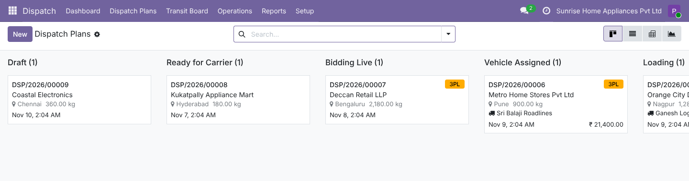
        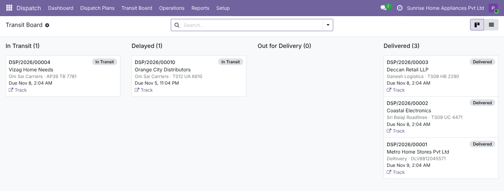
        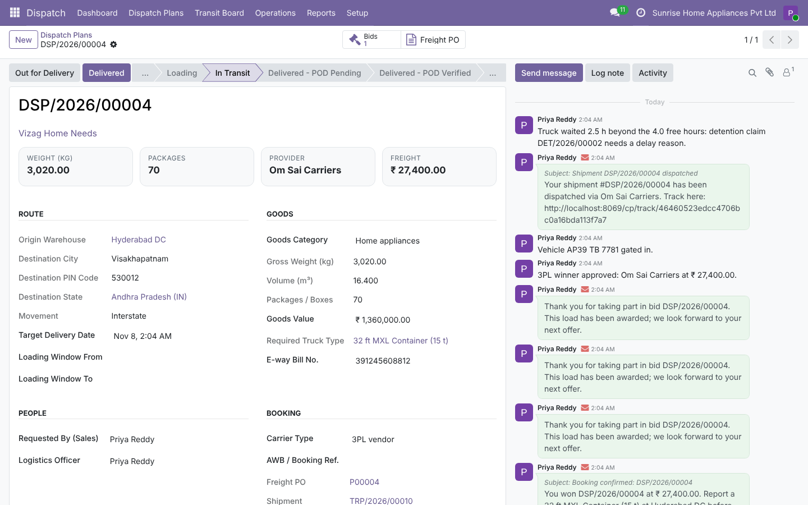
        <p style="text-align: center; color: #4A5672; font-size: 14px; margin-top: 8px;">A plan in transit: route, goods, booking and freight PO, with every step recorded in the chatter.</p>
    </div>

    <!-- Regular partners -->
    <div style="margin-top: 44px;">
        <p style="margin: 0; font-size: 13px; font-weight: 700; letter-spacing: .08em; color: #1F56B8;">REGULAR PARTNERS FIRST</p>
        <h3 style="font-size: 25px; font-weight: 800; margin: 4px 0 10px;">Ask DHL, Delhivery, FedEx and your own carriers before anyone else</h3>
        <ul style="font-size: 16px; line-height: 1.7; color: #3A4660; margin: 0 0 14px; padding-left: 22px;">
            <li>One screen per load: Confirmed, No Vehicle, Over Capacity or Out of Service Area, with quoted rate, pickup time and AWB.</li>
            <li>Partners outside their weight, volume or PIN-code limits are pre-filled, so nobody calls them by mistake.</li>
            <li>Every answer is an audit record that cannot be edited or deleted; bidding opens only when every regular partner said no.</li>
            <li>Booking a partner creates the shipment, tracking link and freight purchase order together.</li>
        </ul>
        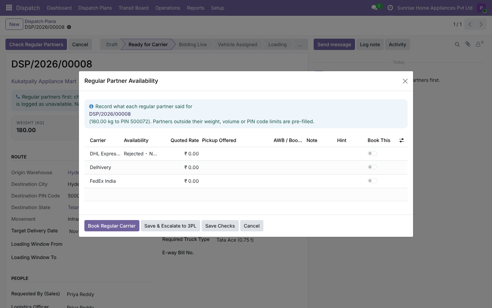
    </div>

    <!-- Bidding -->
    <div style="margin-top: 44px;">
        <p style="margin: 0; font-size: 13px; font-weight: 700; letter-spacing: .08em; color: #1F56B8;">LIVE 3PL BIDDING</p>
        <h3 style="font-size: 25px; font-weight: 800; margin: 4px 0 10px;">A 10–20 minute bid instead of an afternoon of calls</h3>
        <ul style="font-size: 16px; line-height: 1.7; color: #3A4660; margin: 0 0 14px; padding-left: 22px;">
            <li><b>Mode A</b> reverse auction (lowest quote wins) or <b>Mode B</b> fixed target price (first to accept wins).</li>
            <li>Only vendors approved for the truck type and state are invited, by e-mail, SMS or WhatsApp.</li>
            <li>Vendors see a live countdown and their rank on the portal; staff can record phone or WhatsApp offers into the same bid.</li>
            <li>L1 is proposed for approval; choosing anyone else needs a written reason. The freight PO and winner/loser notices go out automatically.</li>
        </ul>
        <div style="margin-top: 14px;">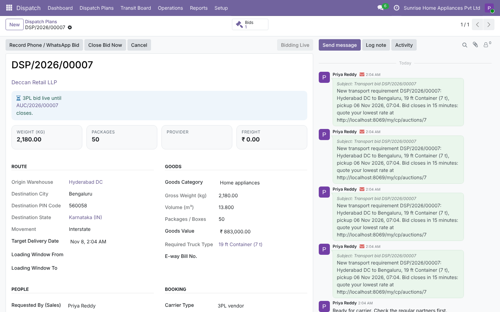<p style="text-align: center; color: #4A5672; font-size: 14px; margin-top: 6px;">Back office: the live bid and every invitation</p></div><div style="margin-top: 14px;">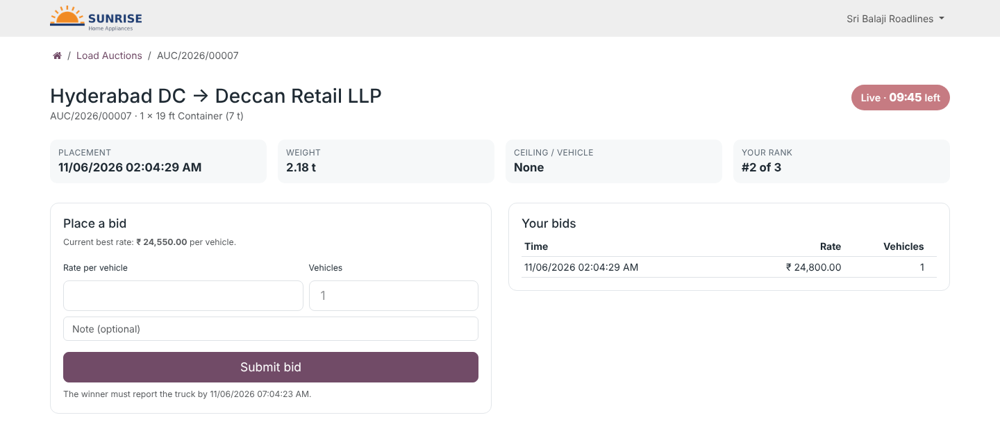<p style="text-align: center; color: #4A5672; font-size: 14px; margin-top: 6px;">Vendor portal: countdown, rank and one-click bid</p></div>
    </div>

    <!-- Gate & detention -->
    <div style="margin-top: 44px;">
        <p style="margin: 0; font-size: 13px; font-weight: 700; letter-spacing: .08em; color: #1F56B8;">GATE &amp; DETENTION</p>
        <h3 style="font-size: 25px; font-weight: 800; margin: 4px 0 10px;">Every minute at the gate, on record</h3>
        <ul style="font-size: 16px; line-height: 1.7; color: #3A4660; margin: 0 0 14px; padding-left: 22px;">
            <li>Gate-in (T0) needs vehicle, driver and licence; loading needs the inspection; gate-out (T3) needs the e-way bill when it is required.</li>
            <li>Detention = turnaround minus free hours, priced by each vendor's hourly or daily slab. Delays the transporter caused carry no charge.</li>
            <li>Logistics Manager, then Plant Operations Head approve, never the same person; an adjusted amount needs a reason.</li>
            <li>Detention approved after the freight bill gets its own detention bill, so nothing is billed twice or missed.</li>
        </ul>
        <div style="margin-top: 14px;">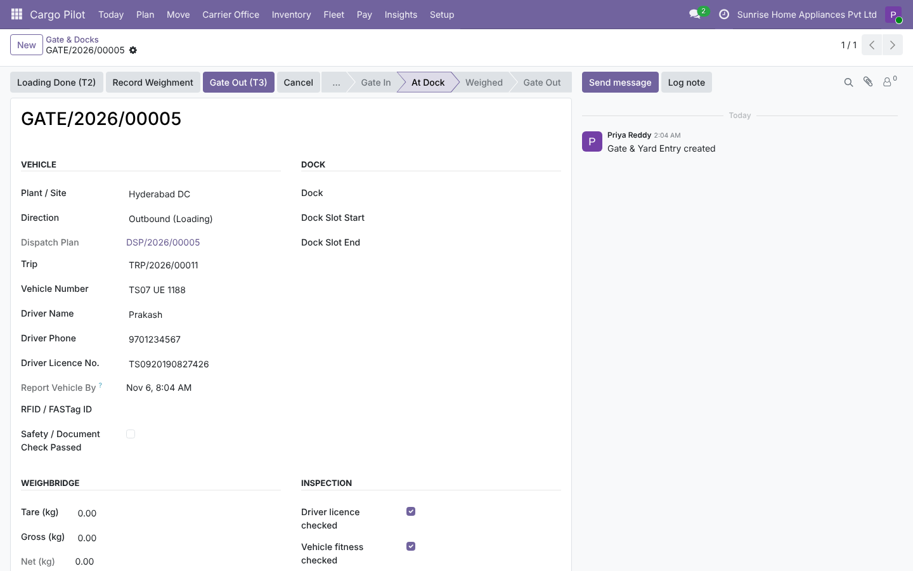</div><div style="margin-top: 14px;">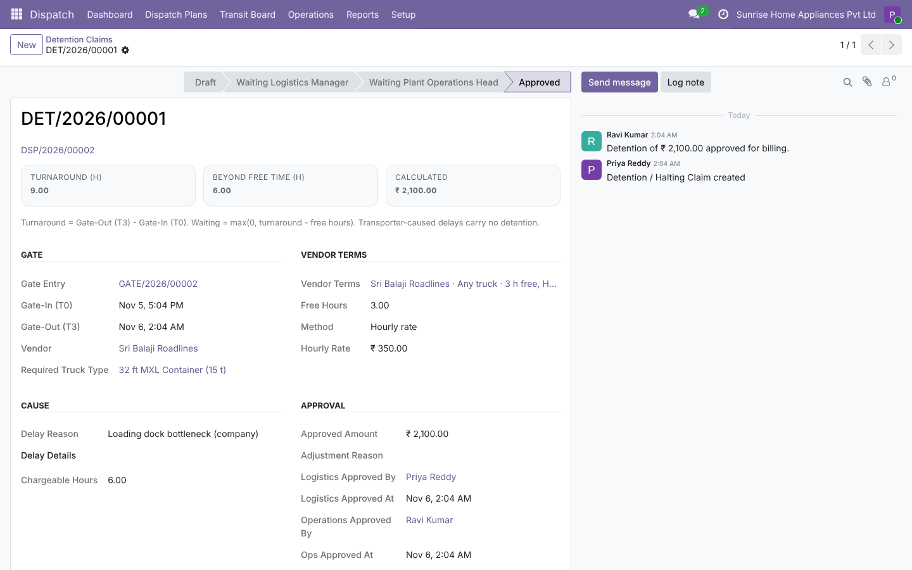</div>
    </div>

    <!-- Tracking -->
    <div style="margin-top: 44px;">
        <p style="margin: 0; font-size: 13px; font-weight: 700; letter-spacing: .08em; color: #1F56B8;">TRACKING &amp; CONTROL TOWER</p>
        <h3 style="font-size: 25px; font-weight: 800; margin: 4px 0 10px;">Know where every truck is, and what needs you first</h3>
        <ul style="font-size: 16px; line-height: 1.7; color: #3A4660; margin: 0 0 14px; padding-left: 22px;">
            <li>The <b>Today</b> screen: live counts, a ranked issues inbox with the suggested fix, courier status and every truck on a map.</li>
            <li>Tracking without a GPS box: the driver's phone link, SIM-based tracking with consent, FASTag toll crossings, or the courier's tracking.</li>
            <li>Late or stopped trucks, expiring vehicle papers, missing PODs and overcharged invoices open an issue automatically.</li>
            <li>Customers follow their delivery on a branded tracking page; drivers record arrival and ePOD from their phone.</li>
        </ul>
        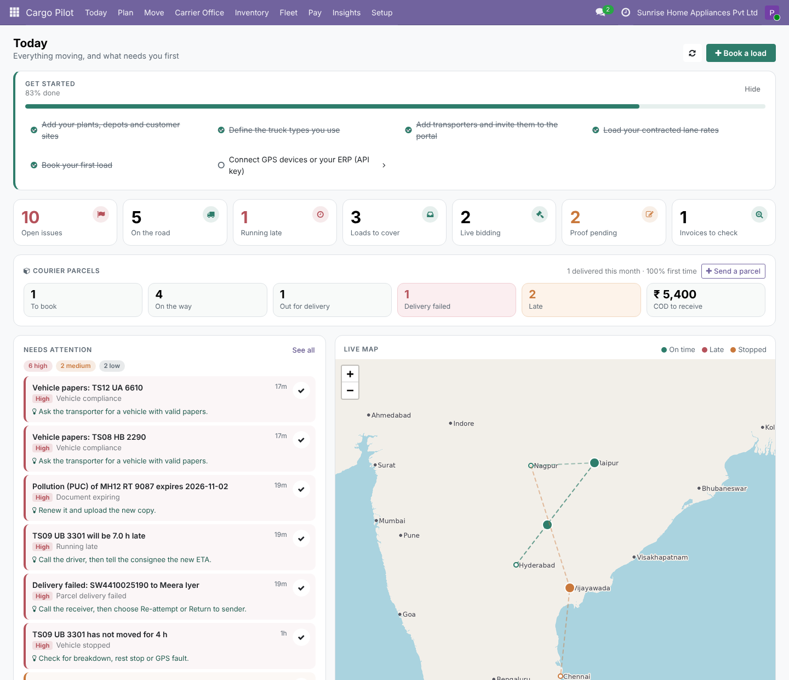
        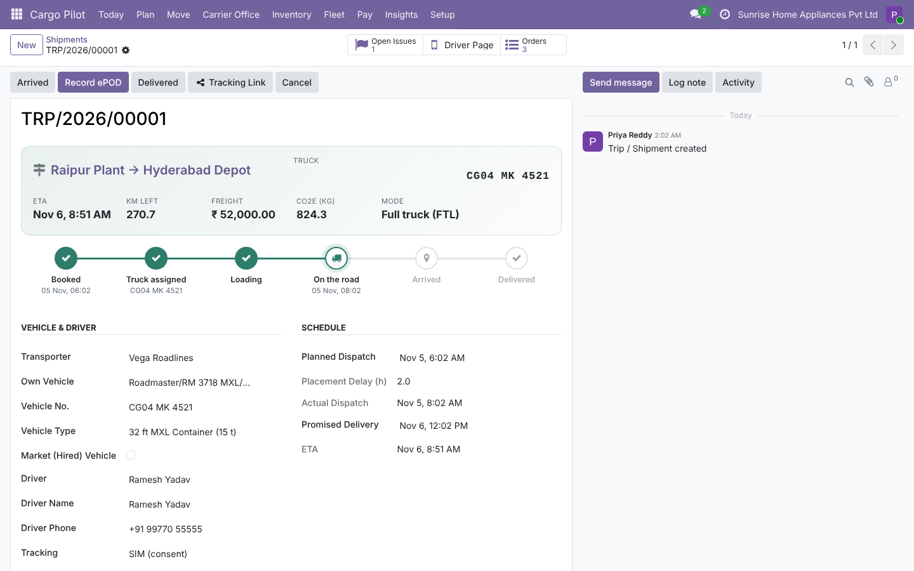
        <table style="width: 100%; border-collapse: separate; border-spacing: 0; margin-top: 14px;">
            <tr>
                <td style="width: 50%; text-align: center; vertical-align: top;">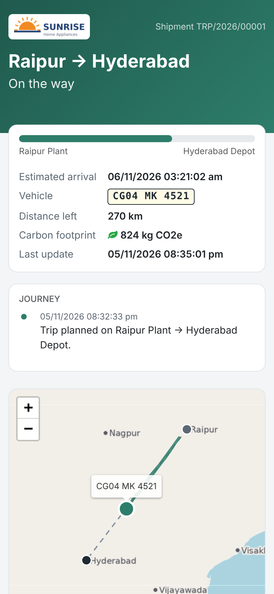<p style="color: #4A5672; font-size: 14px; margin-top: 6px;">Customer tracking page (phone)</p></td>
                <td style="width: 50%; text-align: center; vertical-align: top;">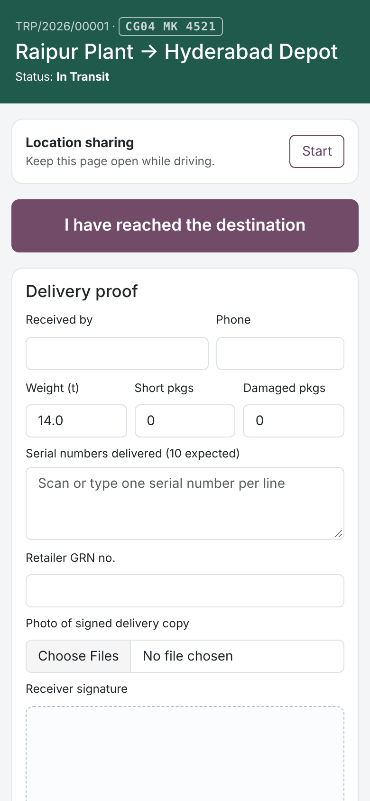<p style="color: #4A5672; font-size: 14px; margin-top: 6px;">Driver page: location sharing and ePOD (phone)</p></td>
            </tr>
        </table>
    </div>

    <!-- POD & billing -->
    <div style="margin-top: 44px;">
        <p style="margin: 0; font-size: 13px; font-weight: 700; letter-spacing: .08em; color: #1F56B8;">POD &amp; FREIGHT BILLING</p>
        <h3 style="font-size: 25px; font-weight: 800; margin: 4px 0 10px;">No verified POD, no payment</h3>
        <ul style="font-size: 16px; line-height: 1.7; color: #3A4660; margin: 0 0 14px; padding-left: 22px;">
            <li>PODs arrive from the vendor portal, the driver's ePOD or the back office; verify against signature, date, stamp and quantity, or reject with a reason.</li>
            <li>Vendor bills show <b>Awaiting POD</b> and cannot be posted or paid until the POD is verified.</li>
            <li>3-way match: freight against the PO, detention against what was approved. A mismatch needs an accounting manager and a reason.</li>
            <li>Freight audit checks billed amount, weight and GPS distance against your rate contract and shows each deduction.</li>
        </ul>
        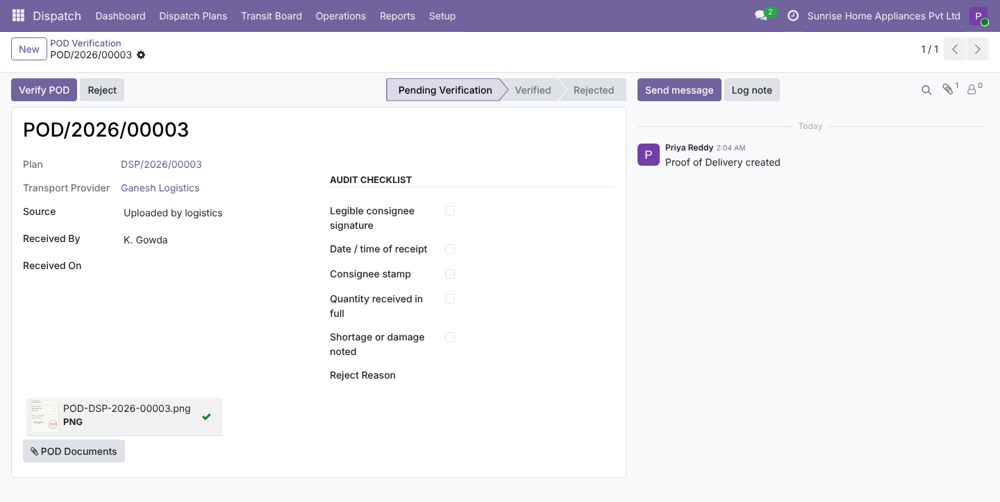
        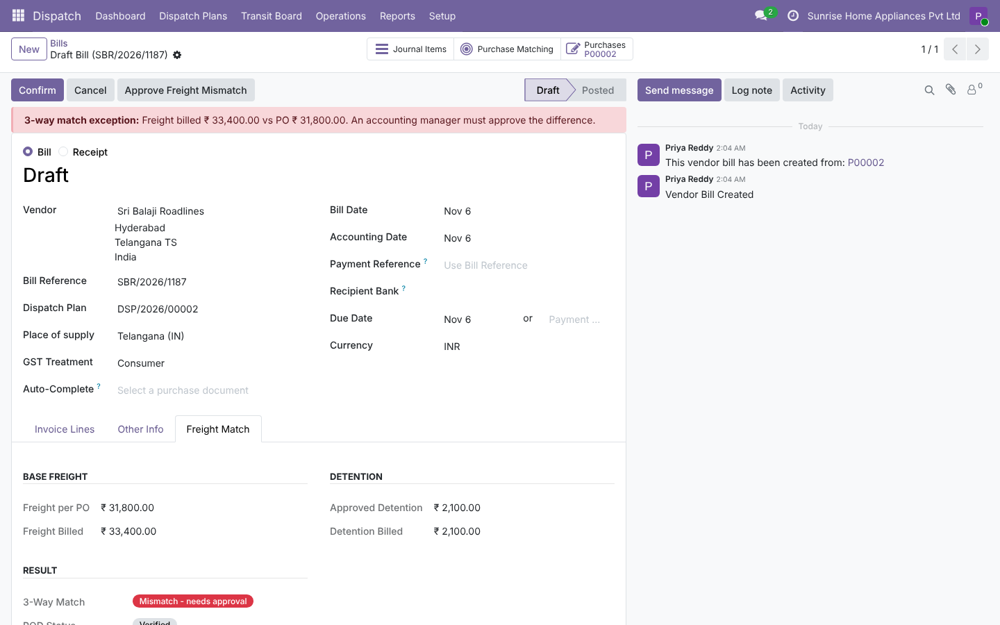
        <p style="text-align: center; color: #4A5672; font-size: 14px; margin-top: 8px;">Billed ₹33,400 against a PO of ₹31,800: the bill is held until an accounting manager approves the difference.</p>
        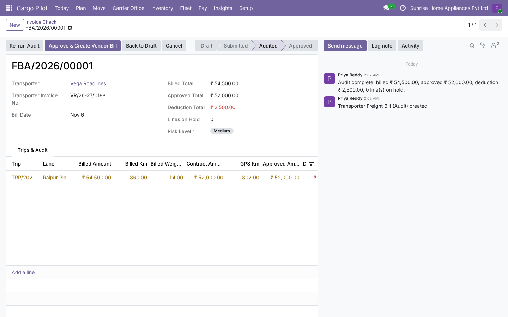
        <div style="margin-top: 14px;">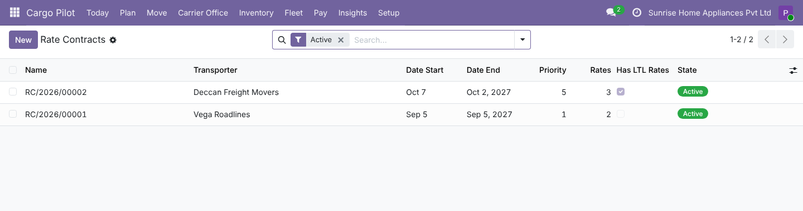<p style="text-align: center; color: #4A5672; font-size: 14px; margin-top: 6px;">Rate contracts by lane and truck type</p></div><div style="margin-top: 14px;">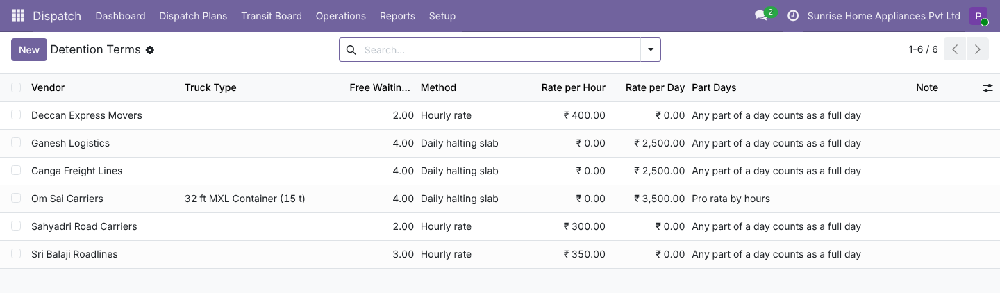<p style="text-align: center; color: #4A5672; font-size: 14px; margin-top: 6px;">Detention terms per vendor and truck type</p></div>
    </div>

    <!-- Courier -->
    <div style="margin-top: 44px;">
        <p style="margin: 0; font-size: 13px; font-weight: 700; letter-spacing: .08em; color: #1F56B8;">COURIER NETWORKS</p>
        <h3 style="font-size: 25px; font-weight: 800; margin: 4px 0 10px;">Parcels too: compare, book, label and track</h3>
        <ul style="font-size: 16px; line-height: 1.7; color: #3A4660; margin: 0 0 14px; padding-left: 22px;">
            <li>Delhivery, Blue Dart, DTDC, Shiprocket, Xpressbees and ClickPost, plus a rate card for counter-booked couriers.</li>
            <li>Compare price and transit days, book the AWB, print a 4×6 label, request pickups and follow every scan.</li>
            <li>Failed deliveries, COD to collect and late parcels show up for action; courier prices on quotations and the checkout.</li>
        </ul>
        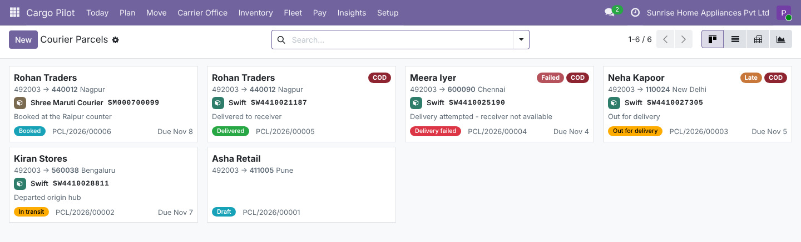
        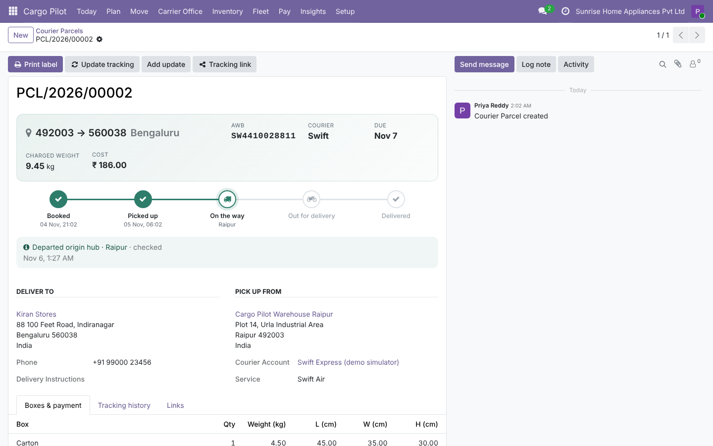
    </div>

    <!-- India -->
    <div style="margin-top: 44px;">
        <p style="margin: 0; font-size: 13px; font-weight: 700; letter-spacing: .08em; color: #1F56B8;">MADE FOR INDIA</p>
        <h3 style="font-size: 25px; font-weight: 800; margin: 4px 0 10px;">E-way bill, FASTag, VAHAN and WhatsApp built in</h3>
        <ul style="font-size: 16px; line-height: 1.7; color: #3A4660; margin: 0 0 14px; padding-left: 22px;">
            <li><b>E-way bill (GSP):</b> Part-B updated when the truck is assigned, validity extension and consolidated EWB.</li>
            <li><b>ULIP:</b> FASTag toll crossings become tracking points; VAHAN checks RC, fitness, insurance, PUC and permit before loading.</li>
            <li><b>WhatsApp Cloud API:</b> approved templates for bid invitations, driver links, customer alerts and POD reminders, with delivery status.</li>
            <li><b>SIM tracking:</b> phone-based location with the driver's consent. Every connection has a simulator to test before going live.</li>
        </ul>
        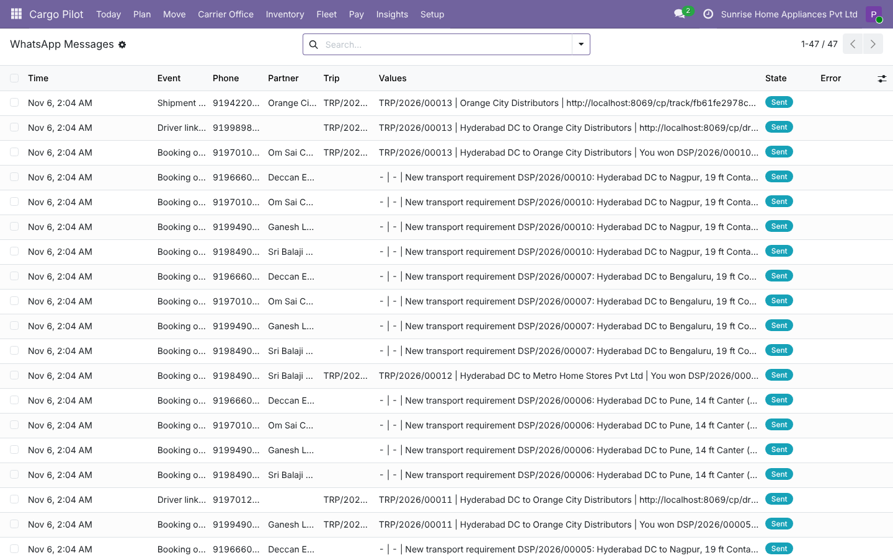
        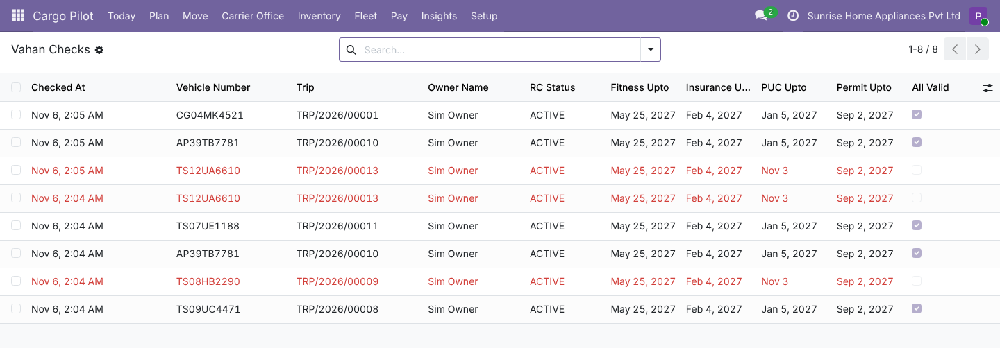
    </div>

    <!-- Commerce & stock -->
    <div style="margin-top: 44px;">
        <p style="margin: 0; font-size: 13px; font-weight: 700; letter-spacing: .08em; color: #1F56B8;">SALES, STOCK &amp; E-COMMERCE</p>
        <h3 style="font-size: 25px; font-weight: 800; margin: 4px 0 10px;">Plan trucks from Inventory, see stock everywhere</h3>
        <ul style="font-size: 16px; line-height: 1.7; color: #3A4660; margin: 0 0 14px; padding-left: 22px;">
            <li><b>Plan Truck</b> from one or many deliveries; Order No. and Source Document carry the sales order numbers.</li>
            <li>Margin after freight on every sales order; warehouse allocation rules by state, customer and stock.</li>
            <li><b>EasyEcom:</b> marketplace orders flow in, same-city orders are combined into one multi-drop load, tracking and status flow back.</li>
            <li><b>Stock 360:</b> in the warehouse, reserved, on trucks and at marketplace hubs, in one view. <b>Zoho Books &amp; Creator:</b> vendors and freight bills with RCM / TDS.</li>
        </ul>
        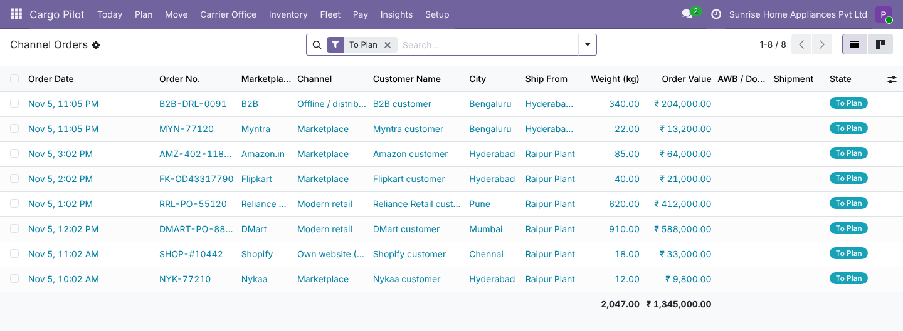
        <div style="margin-top: 14px;">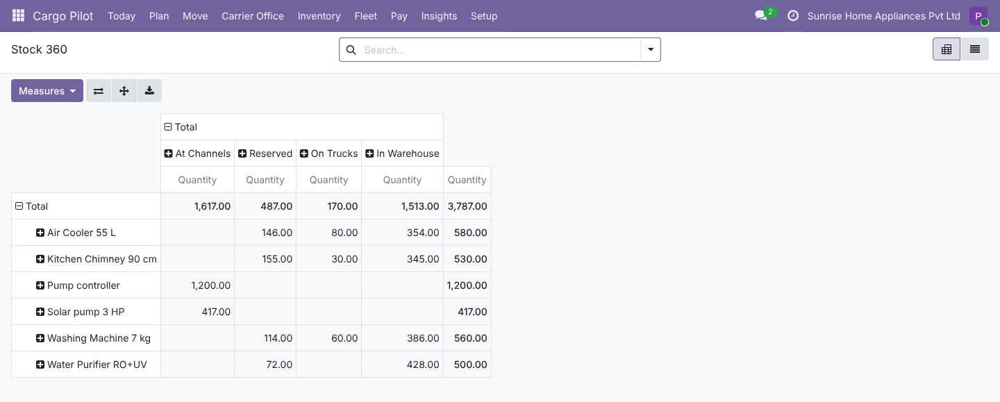<p style="text-align: center; color: #4A5672; font-size: 14px; margin-top: 6px;">Stock 360</p></div><div style="margin-top: 14px;">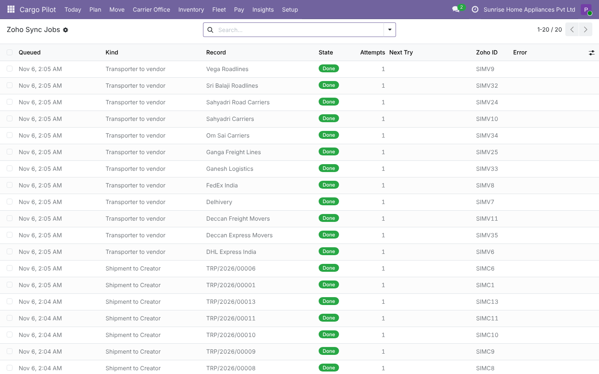<p style="text-align: center; color: #4A5672; font-size: 14px; margin-top: 6px;">Zoho sync jobs with automatic retries</p></div>
    </div>

    <!-- Insights -->
    <div style="margin-top: 44px;">
        <p style="margin: 0; font-size: 13px; font-weight: 700; letter-spacing: .08em; color: #1F56B8;">INSIGHTS</p>
        <h3 style="font-size: 25px; font-weight: 800; margin: 4px 0 10px;">Freight spend you can explain</h3>
        <ul style="font-size: 16px; line-height: 1.7; color: #3A4660; margin: 0 0 14px; padding-left: 22px;">
            <li>Freight spend, cost per kg and freight share of goods value by month, mode, channel and lane.</li>
            <li>Transporter scorecards: acceptance, placement, on-time, damage-free, POD within 48 h and billing accuracy.</li>
            <li>CO2e per shipment and per period.</li>
        </ul>
        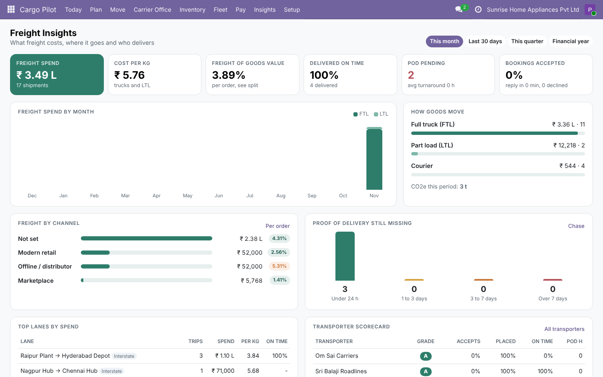
    </div>

    <!-- ========================= ROLES ========================= -->
    <h2 style="font-size: 30px; font-weight: 800; color: #13213F; margin: 56px 0 16px; text-align: center;">Built for every role</h2>
    <table style="width: 100%; border-collapse: collapse; font-size: 15px;">
        <tr style="background: #13213F; color: #fff;"><th style="text-align: left; padding: 11px 14px; width: 28%;">Role</th><th style="text-align: left; padding: 11px 14px;">What they do in Cargo Pilot</th></tr>
        <tr style="background: #F7F9FC;"><td style="padding: 10px 14px; font-weight: 700;">Sales coordinator</td><td style="padding: 10px 14px;">Creates dispatch plans from delivery orders and follows them to delivery.</td></tr>
        <tr><td style="padding: 10px 14px; font-weight: 700;">Logistics officer / manager</td><td style="padding: 10px 14px;">Checks partners, runs bids, approves the winner and the first detention step.</td></tr>
        <tr style="background: #F7F9FC;"><td style="padding: 10px 14px; font-weight: 700;">Gate security</td><td style="padding: 10px 14px;">Records gate-in, inspection, loading and gate-out from a simple screen.</td></tr>
        <tr><td style="padding: 10px 14px; font-weight: 700;">Plant operations head</td><td style="padding: 10px 14px;">Gives the second detention approval.</td></tr>
        <tr style="background: #F7F9FC;"><td style="padding: 10px 14px; font-weight: 700;">Accounts</td><td style="padding: 10px 14px;">Posts and pays bills only after POD and 3-way match; approves justified differences.</td></tr>
        <tr><td style="padding: 10px 14px; font-weight: 700;">3PL vendor / transporter</td><td style="padding: 10px 14px;">Bids on the portal, sees gate times, uploads PODs and submits invoices.</td></tr>
        <tr style="background: #F7F9FC;"><td style="padding: 10px 14px; font-weight: 700;">Driver and customer</td><td style="padding: 10px 14px;">Driver shares location and records ePOD from a phone link; the customer follows the tracking page.</td></tr>
    </table>

    <!-- ========================= GET STARTED ========================= -->
    <h2 style="font-size: 30px; font-weight: 800; color: #13213F; margin: 56px 0 16px; text-align: center;">Start in an afternoon</h2>
    <table style="width: 100%; border-collapse: separate; border-spacing: 12px;">
        <tr>
            <td style="width: 25%; vertical-align: top; background: #F2F6FB; border-radius: 12px; padding: 18px;"><p style="margin: 0; font-size: 30px; font-weight: 800; color: #1F56B8;">1</p><p style="margin: 4px 0 0; font-size: 15px; line-height: 1.5;"><b>Install</b> Cargo Pilot TMS. It adds the Odoo apps it uses: Sales, Inventory, Purchase, Invoicing, Fleet.</p></td>
            <td style="width: 25%; vertical-align: top; background: #F2F6FB; border-radius: 12px; padding: 18px;"><p style="margin: 0; font-size: 30px; font-weight: 800; color: #1F56B8;">2</p><p style="margin: 4px 0 0; font-size: 15px; line-height: 1.5;"><b>Set up</b> truck types, regular partners, 3PL vendors with detention terms, and your rate contracts.</p></td>
            <td style="width: 25%; vertical-align: top; background: #F2F6FB; border-radius: 12px; padding: 18px;"><p style="margin: 0; font-size: 30px; font-weight: 800; color: #1F56B8;">3</p><p style="margin: 4px 0 0; font-size: 15px; line-height: 1.5;"><b>Connect</b> GSP, ULIP, WhatsApp, couriers, Zoho or EasyEcom; test each with its simulator first.</p></td>
            <td style="width: 25%; vertical-align: top; background: #F2F6FB; border-radius: 12px; padding: 18px;"><p style="margin: 0; font-size: 30px; font-weight: 800; color: #1F56B8;">4</p><p style="margin: 4px 0 0; font-size: 15px; line-height: 1.5;"><b>Go</b>: create a dispatch plan from today's deliveries and follow the Today screen.</p></td>
        </tr>
    </table>

    <!-- ========================= FAQ ========================= -->
    <h2 style="font-size: 30px; font-weight: 800; color: #13213F; margin: 50px 0 14px; text-align: center;">Questions</h2>
    <div style="font-size: 15px; line-height: 1.6; color: #3A4660;">
        <p style="margin: 0 0 4px; font-weight: 700; color: #13213F;">Does it work on Odoo Community?</p>
        <p style="margin: 0 0 16px;">Yes. It uses only standard apps available in Community and Enterprise. If the Documents app is installed, verified PODs are filed there too.</p>
        <p style="margin: 0 0 4px; font-weight: 700; color: #13213F;">Do I need a GPS device in every truck?</p>
        <p style="margin: 0 0 16px;">No. Drivers can share location from a phone link, and you can add SIM-based tracking, FASTag toll points or your GPS provider through the API.</p>
        <p style="margin: 0 0 4px; font-weight: 700; color: #13213F;">Do I need credentials for the integrations?</p>
        <p style="margin: 0 0 16px;">Only for the ones you use: your GSP for e-way bills, ULIP, Meta WhatsApp Cloud API, your courier accounts, Zoho or EasyEcom. Each has a simulator so you can test the whole flow first.</p>
        <p style="margin: 0 0 4px; font-weight: 700; color: #13213F;">We already use the separate Cargo Pilot modules. Can we upgrade?</p>
        <p style="margin: 0 0 16px;">Yes. Remove the old add-on folders and upgrade Cargo Pilot TMS; every record, field, view and access right moves into the single module.</p>
        <p style="margin: 0 0 4px; font-weight: 700; color: #13213F;">Is it tested?</p>
        <p style="margin: 0 0 16px;">140 automated tests cover planning, partner checks, bidding, gate, detention, POD, billing, couriers, integrations and the vendor portal. They run on every release.</p>
    </div>

    <!-- ========================= SUPPORT ========================= -->
    <div style="margin-top: 40px; background: #13213F; color: #ffffff; border-radius: 16px; padding: 30px 28px; text-align: center;">
        
        <h3 style="font-size: 24px; font-weight: 800; margin: 18px 0 8px; color: #ffffff;">Built and supported by Zivo IT Technologies</h3>
        <p style="font-size: 16px; line-height: 1.6; color: #D6DEEA; max-width: 720px; margin: 0 auto;">
            Official Odoo partner, Hyderabad. Installation help is included. Need a demo, a configuration walkthrough or a customisation?
        </p>
        <p style="margin: 18px 0 0;">
            <a href="mailto:info@zivoit.com" style="display: inline-block; background: #1FB3CC; color: #13213F; font-weight: 700; font-size: 16px; text-decoration: none; border-radius: 8px; padding: 10px 20px; margin: 4px;">info@zivoit.com</a>
            <a href="https://www.zivoit.com" target="_blank" style="display: inline-block; background: #ffffff; color: #13213F; font-weight: 700; font-size: 16px; text-decoration: none; border-radius: 8px; padding: 10px 20px; margin: 4px;">www.zivoit.com</a>
        </p>
    </div>
</div>
</section>
